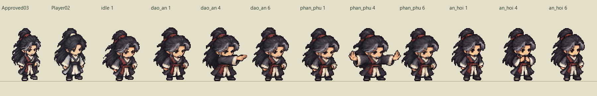
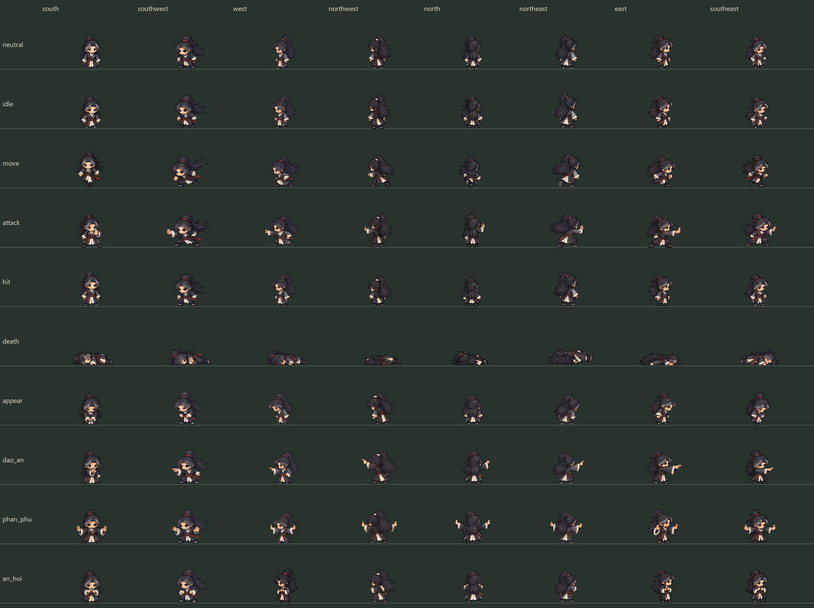
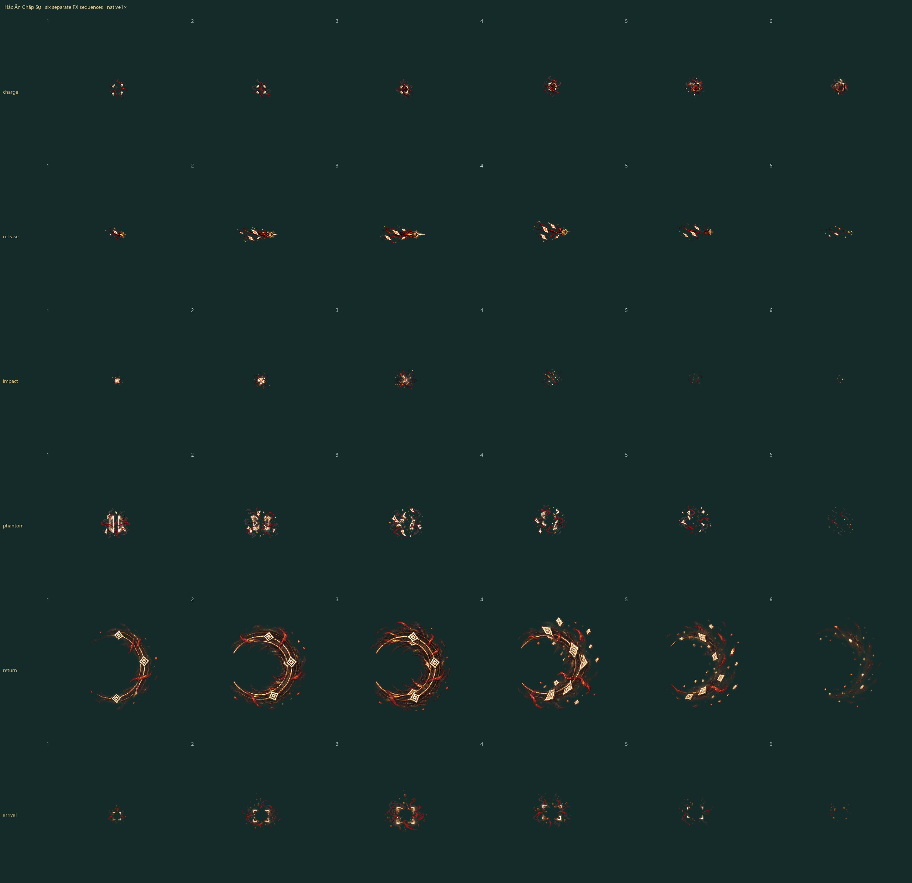

Trúng–hụt–hủy là dữ kiện của fixture riêng. Đòn né tính từ lúc khóa hướng, cộng250ms phản ứng và120ms độ trễ; tác động chỉ bật khi fixture xác nhận trúng. Dư ảnh không có hit, loot hoặc entity gameplay.
Pose đang chọn · chung scale và điểm chân
Đối chiếu anatomy với neutral03 đã duyệt
Cùng điểm chân và tỷ lệ2×; xem cả mở đầu, phát và hồi thế của từng chiêu cạnh mẫu đã duyệt và Vương Lâm.

Ma trận tám hướng / chín action
North và hai hướng chéo sau được vẽ từ phía lưng. Death giữ tỷ lệ gốc; thân nằm không chuẩn hóa về chiều cao đứng.

Sáu lớp ấn thuật riêng
Tụ ấn · Đạo Ấn · va chạm · tan dư ảnh · Ấn Hồi · xuất hiện. Alpha mềm giữ nguyên, bóng và vùng gameplay nằm riêng.
